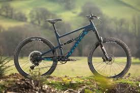
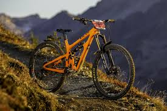

A mountain bike (MTB) or mountain bicycle is a bicycle designed for off-road cycling. Mountain bikes share some similarities with other bicycles, but incorporate features designed to enhance durability and performance in rough terrain.
SCertain of these bicycles have been referred to as 'sportive' bicycles to distinguish them from racing bicycles.
An electric bicycle also known as an e-bike or ebike is a bicycle with an integrated electric motor which can be used to assist propulsion.